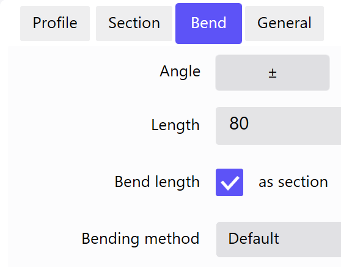

L'éditeur de profil permet de créer des profils comportant au moins deux côtés.
Tapotez sur l'écran principal pour faire apparaître une graduation angulaire. Dans le coin supérieur gauche apparaît par ailleurs une fenêtre de niveau supérieur spécifiant l'angle intérieur et la longueur du côté activé.
Les barres d'affichage ci-après sont disponibles sur le côté droit :
| Symbole | Signification |
|---|---|

|
Fonctions de zoom |

|
Position |

|
Usinage |
Barre supérieure
Les fonctions et menus principaux sont affichés dans cette ligne d'en-tête. La barre supérieure est affichée dans toutes les vues.
Les boutons suivants peuvent être développés à l'aide des sous-fonctions.
 Programmes & Fonctions
Programmes & Fonctions
Ce menu permet de lancer les programmes et d'exécuter des paramètres supplémentaires.
| Symbole | Signification |
|---|---|

|
Lancer ou passer au programme BySoft Cell Control Bend |

|
Lancer le programme Administrateur |

|
Lancer la boîte de dialogue Paramètres (See «Configurations») |
 Fonctions d'aide
Fonctions d'aide
Ce menu comporte toutes les fonctions pour les informations sur le programme.
| Symbole | Signification |
|---|---|

|
Lancer la boîte de dialogue pour les tutoriels vidéo |

|
Lance l'aide en ligne en tant qu'application autonome |

|
Ouvre la boîte de dialogue Affichage détaillé de la version. |
Les profils peuvent être créés géométriquement ou par saisie tabulaire.
Tip: Sélectionner le bouton Propriétés pour modifier ultérieurement l'angle et la longueur des côtés sur l'onglet Pliages.
Géométrique
La saisie est réalisée en tapotant sur la graduation angulaire.
-
Sélectionner le bouton. La graduation angulaire est affichée.
- Tirez pour définir la longueur et l'angle du premier côté. La graduation angulaire se déplace toujours au point d'extrémité du côté.
- Tirez à nouveau dans un angle donné pour accrocher un deuxième côté à l'extrémité du premier.
- Enregistrer le profil achevé sous un nouveau nom à l'aide de la fonction Enregistrer.
- La fonction Exportation permet de charger automatiquement la pièce dans le programme BySoft Cell Control Bend pour l'usiner.
Tableau
La saisie est réalisée en indiquant alternativement la longueur du côté à l'aide de la fonction Tableau.
- Sélectionner le bouton Tableau dans la barre de fonctions.
-
 Sélectionner le bouton.
Sélectionner le bouton. - Entrer la longueur du premier côté dans la boîte de dialogue de saisie et valider avec OK.
- Entrer l'angle du deuxième côté dans la boîte de dialogue de saisie et valider avec OK.
- Entrer la longueur du deuxième côté dans la boîte de dialogue de saisie et valider avec OK.
- Répéter les étapes 4 à 5 jusqu'à ce que tous les côtés soient créés.
- Enregistrer le profil achevé sous un nouveau nom à l'aide de la fonction Enregistrer.
- La fonction Exportation permet de charger automatiquement la pièce dans le programme BySoft Cell Control Bend pour l'usiner.
Si vous modifiez "uniquement" la longueur de pliage sur une pièce existante, la technologie existante peut être validée.
NOTE: Lors d'un changement de la longueur de pliage, il est nécessaire d'actualiser ensuite dans le menu Technologie du programme ByVision Cutting le plan positionnement outils et de repositionner les axes de butée.
Prérequis :
- Le nombre de coupes doit être identique.
- Le nombre de surfaces doit être identique à chaque étape.
- Le nombre de lignes de pliage doit être identique.
- Les paramètres BendID, angle final, raccourcissement et rayon intérieur du pliage doivent correspondre pour chaque ligne de pliage.
- Les longueurs de côté peuvent être modifiées. Il est toutefois nécessaire de contrôler ultérieurement la séquence de pliage.
Si un pliage auxiliaire a été inséré, la technologie ne peut plus être rassemblée. L'insertion d'un prépliage n'a aucune incidence et est par conséquent autorisée.
Aucun côté ne doit être supprimé ou ajouté.
Les paramètres déterminants dans un processus de pliage ne doivent pas être modifiés.

Si les dimensions extérieures ne sont pas indiquées de manière conséquente sur les dessins, la longueur de côté peut être incrémentée de l'épaisseur de la tôle.
Sélectionner à cet effet le texte Longueur. Une fenêtre popup (A) apparaît pour la correction vers le haut ou le bas de la longueur de côté et de l'épaisseur de la tôle.

L'utilisation des outils sélectionnés est contrôlée lors de la saisie d'un nouveau profil. Les propriétés contrôlées sont les suivantes :
- Autorisation d'aplatissement
- Méthode de pliage Les méthodes de pliage sont le pliage 3 points, le pliage en l'air et l'estampage. (par ex. Estampage Le semi-estampage et l'estampage intégral constituent la méthode de pliage la plus précise. La forme et l'angle de pliage sont définis par la géométrie de l'outil supérieur et inférieur. Les forces de pression requises pour ce faire étant très élevées, l'usure de la plieuse est plus important.)
- Hampes croisées
- longueur minimale de la hampe
Un avertissement est affiché si un pliage à plat est programmé et/ou un outil inférieur ne possède pas d'autorisation pour le pliage à plat. L'onglet Plier dans la boîte de dialogue Propriétés est affiché automatiquement.
L'avertissement est toujours visible au niveau de l'outil même s'il est éventuellement nécessaire de modifier aussi la méthode de pliage. L'avertissement ne s'éteint qu'une fois le conflit résolu.